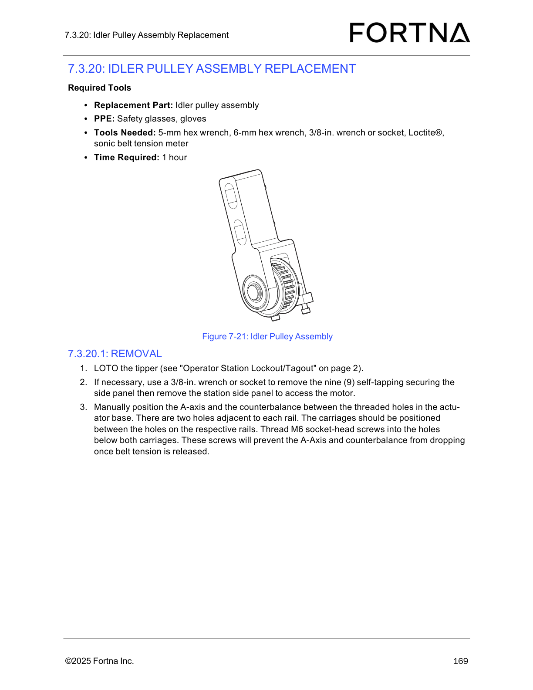

| Procedure ID | proc_prepare_for_idler_pulley_assembly_removal_v1 |
|---|---|
| Title | Prepare for idler pulley assembly removal |
| Procedure Type | recovery |
| Primary Role | L2_support |
| Support Safe | Yes |
| Validation Status | needs_sme_review |
| Merge Status | source_finalized |
Safely prepare the tipper for idler pulley assembly removal by performing lockout/tagout, removing the station side panel if motor access is needed, positioning the A-axis and counterbalance between the threaded holes in the actuator base, verifying carriage alignment relative to the rail holes, and installing M6 socket-head screws below both carriages so the A-axis and counterbalance cannot drop when belt tension is released.
Use this procedure when preparing the OptiSweep tipper for idler pulley assembly replacement/removal and before belt tension is released in the idler pulley assembly service task.
Responsible role: L2_support
Instruction:
LOTO the tipper as referenced by "Operator Station Lockout/Tagout" on page 2.
Expected result:
The tipper is locked out and safe for maintenance access.
Stop or Escalate If:
Responsible role: L2_support
Instruction:
If needed for motor access, use a 3/8-in. wrench or socket to remove the nine self-tapping fasteners securing the side panel, then remove the station side panel.
Expected result:
The station side panel is removed when needed and the motor access area is exposed.
Screens / Images:

Stop or Escalate If:
Responsible role: L2_support
Instruction:
Manually position the A-axis and the counterbalance between the threaded holes in the actuator base.
Expected result:
The A-axis and counterbalance are positioned between the threaded holes in the actuator base.
Screens / Images:
Stop or Escalate If:
Responsible role: L2_support
Instruction:
Verify there are two holes adjacent to each rail and that the carriages are positioned between the holes on the respective rails.
Expected result:
Each rail has two adjacent holes and each carriage is positioned between the holes on its respective rail.
Screens / Images:
Stop or Escalate If:
Responsible role: L2_support
Instruction:
Thread M6 socket-head screws into the holes below both carriages to prevent the A-axis and counterbalance from dropping once belt tension is released.
Expected result:
M6 socket-head screws are installed below both carriages and the A-axis and counterbalance are secured against dropping.
Screens / Images:
Stop or Escalate If: